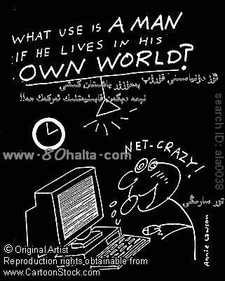

ئالدىنقى يازما
ئالدىنقى يازما كېيىنكى يازما
كېيىنكى يازما
تورغا كۆپ كىرىدىغانلارنىڭ ئاھۇ-پەريادى [سۇئال-جاۋابلار]
ئاپتور:Birzat ۋاقتى:2010-06-15


مەن ئۆزەمنى كىسەل بېسىۋالغاندەكلا ھېس قىلىمەن . ئىمىنۇت كۈچۈم ئىنتايىن تۆۋەن بۇيىل 24 ياش ئۇغۇل . 56 كىلوگىرام
ئۆزەم كومپىيۇتېر خادىمى كومپىيۇتېرنىڭ ئالدىدا ئولتۇرۇش ۋاقتىم 10 سائەتتىن ئېشىپ كىتىدۇ .
ئالامەتلىرىم :
ھاۋا ئازىراقلا سوۋۇپ بولغۇچە دىماقلىرىم پۈتۈپ كىتىدۇ زۇكام بولۇپپ قالغان ئادەمدەك مىچىلداپ كىتىمەن . ئەستە تۇتۇش قابىلىيىم ئىنتايىن ناچار . بەك كۆپ خىيال قىلىمەن( ھەممىسى ئاقمايدىغان خىيال بەزىدە خيال قىلىۋېتىپ كۈلۈپمۇ سالىمەن دە دەرھال ئەتراپىمغا قاراپ بىرەرسىنىڭ كۈرۈپ قالغان قالمىغانلىقىغا دىققەت قىلىمەن ) جىىق يول ماڭالمايمەن بولمىسا تەرلەپ سۇ سۇ بوپ كىتىمەن ئەما سېمىزمۇ ئەمەس . سوغۇقۇم ئېشىپ كەتتىمىكىن دېسەم تۇلا ئىىسقىم ئېشىپ كىتىدۇ . كچىدە پۇتۇمنى ئۇزۇن سۇنۇپ ياتسام بېلىم شۇنداق تېلىپ كەتكەندەك بۇلۇپ كىتىدۇ( بەزى بەزىدە ، جىقراق ھەركەت قىلغان كۈنلىرىدە ) . كىتاب كۆرسەم كۆزۈم چىڭقىلىپ سەل ياش چىققاندەك بۇلىدۇ . ئىھتىلام بولۇش قتېىم سانى 2-3 ئايدا بىرەر قېتىم ، ئەرلىك ئەزا كچىك . ئاستى تەرلەيدۇ (بۇرۇن دىققەت قىلماپتىكەنمەن نۇرمال ئىش ئوخشايدۇ دەپ لىكىن يازمىلىرىنى ئۇقۇسام ئۇ نۇرمال ئەھۋال ئەمەسكەن . ) تۇلا زۇكام بۇلىمەن . چېچىم چۈشۈۋاتىدۇ . يەنە مۇشۇ 1-2 ھەپتىدىن بۇيان بەكلا قالايمىقان چۈشلەرنى كۆرۈۋاتىمەن ئەتىگەندە قوپسام بىرسىمۇ ئېسىمدە يوق ھەم ئىنتايىن چارچاپ كەتكەندەك ھىېس قىلىمەن . ئادەتتە 11 لەردە ئۇخلايمەن ئەمما ئەتىگەندە پەقەتلا ئەتىگەن قۇپالمايمەن بۇ ئۆزەمنىڭ ھورۇنلىقىمدىن ئەمەس بەلكى پەقەتلا كۆزۈمنى ئاچالمايمەن بالدۇرراق قوپاي دېسەممۇ ماغدۇر يوق ، ئويغانغان ۋاقتىممۇ ئىنتايىن روھسىز .
مەن زادى كېسەل چىرمىۋالغان بىر بەندىمۇ ؟ مەن ئەمدىلا 24 كگە كىرگەن تۇرسام نىمىشقا بالدۇرلا قېرىلىق ئالامەتلىرى كۆرۈلىدۇ ؟
پىسخىكا جەھەتتىنمۇ ياخشىراق بىر مەسلىھەتكە ،داۋالاش جەھەتتىنمۇ ياخشى بىر داۋالاش ئۇسۇلى ۋە رىتسپىلىرىغا مۇھتاجمەن . ئوبدان مەنپەئەت قىلىدىغان دۇرىلار بولسا تەۋسىيە قىلسىلىرى ىوش بۇلاتتىم .
جاۋاب: كومپيۇتېر ئالدىدا ئۇزۇن ئولتۇرۇش ھەر قايسى جەھەتتىن ئادەمنى ئاجىزلاشتۇرۋېتىدۇ، زېھنى قۇۋۋەت ئاجىزلىشىپ ئۇنتۇغاق بولۇپ كېتىدۇ، جىسمانىي جەھەتتە ئاجىزلىشىپ قېرى ئادەملەردەك پۇت-قولى ماغدۇرسىزلىشىپ كۆزنىڭ نۇرى خۇنۇكلىشىدۇ، شۇڭا كۈندۈلۈك ئولتۇرۇش ۋاقىتلىرى 4-5 سائەتتىن ئارتۇق بولۇپ كەتمىسۇن، ياش جانلىرىنى ئايىسىلا دەي دېسەم ئۆزۈممۇ ئەمەل قىلالمايدىغان بىر ئىشنى سىلىگە تەۋسىيە قىلغان بولۇپ قالىمەن. ھاھاھا ...مەنمۇ ئاخشاملىرى بىر كەچكىچە كومپيۇتېر ئالدىدا ئولتۇرۇپ تورداشلارنىڭ تور بېتىمگە يوللىغان سۇئاللىرىنى بىر-بىرلەپ كۆرۈپ چىقىمەن، ئاندىن جاۋاب يېزىشقا تۇتۇش قىلىمەن، باشقا مەشغۇلاتلار دېگەنلەر بىلەن كۈندۈلۈك كومپيۇتېر ئالىدىدا ئولتۇرۇش ۋاقتىم مېنىڭمۇ 8 سائەتتىن ئىشىپ كېتىدىكەن. ( سىلى بىلەن بىردەم مۇڭدىشىپ قالدۇق ئەمدى ، مەنمۇ سىلىگە بىردەم دەرت تۆكەي...) 3-4 ئاينىڭ ئالدىدا كومپيۇتېر ئالدىدا ئۇزۇن ئولتۇرۇش سەۋەبلىك كۈندە چۈشتىن كىيىن بېشىم ئاغرىيدىغان بولۇپ قالدىم، ئازىراقلا يۆتەل، ياكى چۈشكۈرۈك كەلگۈدەك بولسىغۇ ئىشىم تۈگىدى دېسەم بولىدۇ- بېشىم پارتىلاپ كېتىدىغاندەك ئاغرىپ كۆزلىرىمدىن ياش قۇيۇلۇپ كېتىدىغان بولۇپ قالدىم. شۇ ۋاقىتتىمۇ مۇشۇ كومپيۇتېرنىڭ ئالدىدا ئۇزۇن ئولتۇرۇش سەۋەبلىك چارچاپ كەتكەنلىكىمنى بىلىپ تۇرساممۇ ئىشتىن بىكار بولساملا تورغا چىققۇم كىلىدۇ، بىردەم ئولتۇرساملا يەنە شۇنداق ئاغرىق كىرىپ جاننى قىينىۋەتتى. بۇ ئەھۋال شۇ تەرىقىدە 15 كۈنچە داۋام قىلغاندىن كىيىن ( ھۈنەرۋەن ئۆزىگە چىقىنماس دېگەندەك شۇ ۋاقىتقىچە دورا ئىچىپ باقمىدىم ھا ھا ھا ) بولمىدى دەپ ئىمكان بار كومپيۇتېرنى ئاچمىدىم.
ئاچقان ئەھۋالدىمۇ يېرىم سائەتلەردىن ئاشقاندا ئورنۇمدىن تۇرۇپ بىردەم سىرتلارغا چىقىپ ياكى قەھۋە دەملەپ ئىچىش ، كىچىك تەرەتنى بەك ساقلىماي ۋاقتىدا ھاجەتكە بىرىش ، ۋاقتىدا ئۇخلاش، سەھەر تۇرۇپ چىنىقىش، ناشتىنى بەلەن قىلىش دېگەندەك ئىشلارنى قىلىپ كومپيۇتېرنىڭ ماڭا ئىلىپ كەلگەن زىيانلىرىغا قارىتا بىر يۈرۈش مۇداپىئە تەدبىرلىرىنى ئەمەلىيتىمدە كۆرسەتتىم.
رەيھان جەۋھىرىدىن بىرەر قاپ ئىچىپ بەردىم .
يەنە بىرسى ئۈرۈك مېغىزىنىڭمۇ پايدىسىنى كۆردۈم. تورغا چىققاندا ئۇششاق-چۈششەك بىر نېمە يېگۈم كىلىپ قالسا بىر ئىستاكان قەھۋە ئىچكەچ ئۈرۈك مېغىزىدىن 20-30 تال يەپ بىرىمەن. ماتېرياللاردا كۆرسىتىلىشىچە قەھۋە بىلەن ئۈرۈك مېغىزنىڭ راداتسىيگە قارشى تۇرۇش تەسىرى كۆرنەرلىك ئىكەن. ئۈرۈك مېغىزى راكنىڭ ئالدىنى ئالىدىكەن، ھەم بەدەننى قۇۋۋەتلەيدىكەن.
مۇشۇنداق قىلىپ يۈرۈپ بېشىمنىڭ ئاغرىقى ساقىيىپ قالدى. بوينۇم تالمايدىغان بولۇپ ئۇيقۇمنىڭ سۈپىتى كۆرنەرلىك ياخشىلاندى.
سىلىگە دېسەم ئۇ ياخشى ئادەتلىرىمنى يېقىندىن بىرى يەنە سەل قاراپ ( مۇشۇ تور بەتنى ئاچقاندىكىن چىدىماي بولمىدى دە ھى ھى ھى..) كومپيۇتېر ئالدىدا بەك ئىشلەپ كېتىۋاتىمەن. شۇنىڭ بىلەن تولا چۈش كۆرىدىغان، ئۇيقۇغا قانمايدىغان، چۈشۈمدىمۇ مەندىن بىر كىم تېببى مەسلەھەت سوراپ دېگەندەك شۇنچە كۆپ چۈشلەرنى كۆرۈپ ئۇيقۇمنىڭ سۈپىتى ياخشى بولمايۋاتىدۇ. ئۆتكەندە 7-8 كۈن سەيلى ساياھەت بىلەن كومپيۇتېر ئالدىدا ئولتۇرماپتىم، بەدەنلىرىم باشقىچە يەڭگىللىشىپ، ھېس-تۇيغۇلىرىم شوخلىشىپ ، ئۇخلاپ قوپسام راۋۇرۇس ھاردۇقۇم چىقىدىغان بولۇپ زېھنىم تېتىكلىشىپ كەتكەن ئىدى.
ئايالىم كۆزنىڭ ئاستى نېمىشقا قارىداپ قالىدۇ دەپ سورىغاندا << ئانانىزىم >> قىلسا ياكى ئەر-خوتۇنچىلىق مۇناسىۋەتكە ئۆزىنى بەك ئۇرۇۋەتسە شۇنداق بولۇپ قالىدۇ دەپ جاۋاب بەرگەن ئىدىم.
قايسى كۈنى دۇككاندا خىلى كەچكىچە كومپۇتېردا ئىشلەپ چارچاپ ئۆيگە قايتسام ئايالىم كۆزۈمنىڭ ئاستىغا سىنچىلەپ قاراپ يىغلاپ كەتتى. ھا ھا ھا دېققەت قىلىلى ماقىما!
قارىشىمچە ئۇيغۇر تېبابەت نەزىريىسى بويچە ئېيتساق مۇشۇ جېسمى سۇلياۋ بىلەن تۆمۈردىن پۈتۈلگەن كومپيۇتېر دېگەن << بۇدۇشقاق >> نىڭ تەبئىتى << ئۆتكۈر دەرىجىدە سوغۇق >> بولۇپ بەدەندىكى قۇۋۋەتنى يالماۋۇزدەك شورايدۇ. كاۋاپ ، گۆش-پولۇلار بىلەن خىلى بەك قۇۋۋەتلىك غىزالانسىڭىزمۇ جېسمىڭىزدا ئەتتىگىنى زاغرا ناندا چاي ئىچىپ كەچكىچە ئېتىزدىن كىرمەيدىغان دېھقانلىرىمىزچىلىك قۇۋۋەتلىك ئەمەسمىز.
سەۋەبىنى يۇقۇردىمۇ دەپ ئۆتتۇق . يەنە تۆۋەندىكىچە يېغىنچاق بايان قىلىمىز!
1.كومپيۇتېر ئالدىدىكى كۈندۈلۈك مەشغۇلاتىمىز ئىمكان بار 5-6 سائەتتىن ئىشىپ كەتسە بولمايدۇ.
2.ئانچە -مۇنچە بەدەن چىنىقتۇرۇپ بىرىشكە ئەھمىيەت بىرىپ قان-تومۇرلارنىڭ راۋان بولىشغا كاپالەتلىك قىلمىساق گېمىروي ( بوۋاسىر ) ، ۋە باشقا كېسەللەردىن ساقلانغىلى بولمايدۇ.
3. ئۈچ ۋاقىت تاماققا تولۇق ئەھمىيەت بىرىپ قۇۋۋەتلىك غىزالانماي بولمايدۇ.
3. ئۇيقۇنى ۋاقتىدا ئۆلچەملىك ئۇخلىمىساق بالدۇر قېرىپ كېتىشتىن ساقلىنالمايمىز. چاچ چۈشۈپ پاينەكباش بولىدىغان، ئەرلىك ئىقتىدارىمىز تايىنلىق بولۇپ قالىدىغان بولۇپ قالمايلى يېگىتلىرىمىز!
4. كۆزنى ئاسىراش ئۈچۈن، نېرىپلارنىڭ زىيادە چارچاپ كېتىشىنىڭ ئالدىنى ئىلىش ئۈچۈن زەپە، ئارپا بەدىيان، لاچىندانە دېگەندەك خۇشپۇراق دورا-دەرمەكلەردە چاي ئىچىپ بىرىش كېرەك.
تاماكا چەككەننىڭ ئورنىدا ئانچە-مۇنچە قەھۋە ئىچىپ بىرىڭ!
5. كىچىك تەرەتنى كۆپ ساقلاپ بۆرەك، مەزى بېزى، دوۋساق ۋە باشقا ئومومىي ئەزالارنىڭ سۈيدۈكتىن زەھەرلىنىپ قىلىشىدىن قاتتىق ھەزەر ئەيلەڭ!
ئىشقىلىپ ئىشلەشنىمۇ، ئارام ئىلىشنىمۇ، ئۆزىمىزنى ئاسىراشنىمۇ بىلىشىمىز كېرەك!
بۇرادەر سىلىگە تەن ساقلىق يار بولغاي!


 يازما مەنبەسى: بېكەت ئەسىرى
يازما مەنبەسى: بېكەت ئەسىرى خەتكۈش: كومپيۇتېر، تور
خەتكۈش: كومپيۇتېر، تور  مۇناسىۋەتلىك يازمىلار:
مۇناسىۋەتلىك يازمىلار:
ئىنكاس: 14 | نەقىل: 0 | كۆرۈلگىنى: -
 قايتۇرما
قايتۇرما
ئەسسالامۇ ئەلەيكۇم مۇھەممەد تۇرسۇن (بىرزات)ئاكا مەن بۇ يىل 19 ياشقا كىردىم مەنمۇ شۇ ئانانىزىم دىگەن بۇ مەينەت ئىش بىلەن بىلمەسلىكىم سەۋەبىدىن 3 يىل شۇغۇللانغان ئەھۋالدىن قارغاندا مەنى تىز كىتىدىغان ئىش بار . بۇرۇن خېلى ۋاقىتقىچە ھەپىلشىپ ئاندىن چىقراتتىم.لىكىن ھازىر بىردەمدە چىقىدۇ. يا كۆنۈپ قالغاندىكىن شۇنداقمۇ.ياكى مەنى راس بالدۇر كىتىدۇ.ھەم بەدىنىم بەك سوغۇق زەكىرىمنى سەل كىچىكتەك ھېس قىلىمەن بۇ ئىشتىن قول ئۈزگىلى ئانچە ئۇزۇن بولمىدى روھى كەيپىياتىم بەك تۇراقسىز ھەم مىجەزىم بەك تۈۋەن روھى كەيپىياتىم بەك چۈشكۈن ئۇنىڭ ئۈستىگە ئۈيدىكىلە توي گېپى قىلىۋاتىدۇ . بىلمەسلىكىم سەۋەبىدىن شۇ قىلىپ سالغان ئىشلىرىمغا بەك پۇشايمان قىلىۋاتىمەن ماڭا بىر ئامال كۆرسەتكەن بولسىلا يازغان سۇئالىمنىڭ جاۋابىنى قەيەردىن كۆرىمەن
سالام بىرزات ئەپەندى:بۇ مىنىڭ بىرىنىچى قېتىم يازما يېزىشىم خەت خاتالغى بولسا كەچورىسىز : مەن ناھايىتى سصمئز 24ياشقا كئردئم ظصغئرلئقئم 110كئلوگرام نذرغذنلئغان ظذرذقلاش دورئلئرئنئ يئگةن بولساممذ بئراق قئلچة ظإنإمئ بولمئدئ قانداق قئلئشئم كصرةك؟
ۋاي خۇدا !!!!!!!!مەنمۇ كومپىيوتىر بىلەن ھەپىلىشىمەن ؟بۇ نىڭغا دىققەت قىلسام بولغۇدەك جۇمۇ؟؟؟؟؟؟رەھمەت ئاللاھ رەھمەت قىلسۇن !!!!!!!!!!!!!!!!
assalamu laykum birzat apandim man sizdin bir sual suray digan
man ixhanda adatta bak jik ulturmayman likin bazi wakitlarda majburi ulturuxka tuhra kilip 3-5kun bulhanda jizsi iktidarim sal ajizlihandak ham suduk itixip kildihan bulip kaldu bu zadi kandak kisal ?nim dura ixlitiman bir maslahat bargan bulhan bulsingiz
man ixhanda adatta bak jik ulturmayman likin bazi wakitlarda majburi ulturuxka tuhra kilip 3-5kun bulhanda jizsi iktidarim sal ajizlihandak ham suduk itixip kildihan bulip kaldu bu zadi kandak kisal ?nim dura ixlitiman bir maslahat bargan bulhan bulsingiz
ئەسسالامۇ ئەلەيكۇم ھۆرمەتلىك بىر زات ئەپەندىم
ئاۋۋال ئاللادىن تەنلىرىگە ساقلىق،ئىشلىرىغا بەرىكەت تىلەيمەن.
ئەمدى مەخسەتكە كەلسەم:مەن خوتەننىڭ چەت يىزىسىدىن،بۇ يىل 36گە كىردىم،ئەزەلدىن ئۇششاق-چۇشەك كىسىلىم يوق ئىدى،بىر يىىل بولاي دىدى ۋىلايەتلىك دوختۇرخانىدا ئومۇمىيۇزلۇك تەكشۇرتكەندىمۇ ساق چىققان ئىدىم،بورەك يۇرەك مەزى بەز دىگەنلەرنىڭ ھەممىسى ساق ئىدى.لىكىن نىمە بولدىكىن بىرە ھەپتە بولدى جىنسى ئەزايىم بىئارام بىلىنىدۇ ،كىچىك تارەت قىلسام بەزىدە تارەتتىن كىيىن ئازىراق قويۇق سۇيۇقلۇق كىلىدۇ،لىكىن تارەت قىلسام ئىچىشمايدۇ،يەنە بەزىدە تىلىپۇن ياكى توردا يات ئاياللار بىلەن پاراڭلاشساممۇ شۇنداق ئىشتىنىم سەل ھول بوپ قالىدۇ، ھە راس مەن ھاراق،تاماكۇ دىگەنلەرنىمۇ ئىستىمال قىلىمەن،مۇشۇ بىر ئاي ئىچىدە خىزمەت ۋە مىھماندارچىلىق سەۋەبىدىن ھاراقنى سەل كوپ ئىستىمال قىلىپ قويۇپتىمەن ،دوختۇرلۇقتىن خەۋىرى بار يىقىنلارغا دىسەم سوغۇقلۇق ئىشىپ كىتىپتۇ،دارا ئىشلەتمىسەكمۇ يىمەك-ئىچمەك ئارقىلىق ئوڭشۇلۇپ كىتىدۇ،سوغۇق كىلىدىغان يىمەكلىكلەنى يىمەڭ دەيدۇ،لىكىن مەن تازا ئىشىنەلمەي ،يەنە بىر تەرەپتىن ئوزۇمدىن ئەنسىرەپ سىلىدىن بىر مەسلىھەت سوراي دەپ بۇ خەتنى يىزىپ ئولتۇرۇپتىمەن،قىممەتلىك ۋاقىتلىرىنى چىقىرىپ خىتىمنى كۆرگەنلىرىگە رەھمەت ،مىنىڭ ئەھۋالىمغا قارتا بىر مەسلىھەت بەرگەن بولسىلا.
ئاۋۋال ئاللادىن تەنلىرىگە ساقلىق،ئىشلىرىغا بەرىكەت تىلەيمەن.
ئەمدى مەخسەتكە كەلسەم:مەن خوتەننىڭ چەت يىزىسىدىن،بۇ يىل 36گە كىردىم،ئەزەلدىن ئۇششاق-چۇشەك كىسىلىم يوق ئىدى،بىر يىىل بولاي دىدى ۋىلايەتلىك دوختۇرخانىدا ئومۇمىيۇزلۇك تەكشۇرتكەندىمۇ ساق چىققان ئىدىم،بورەك يۇرەك مەزى بەز دىگەنلەرنىڭ ھەممىسى ساق ئىدى.لىكىن نىمە بولدىكىن بىرە ھەپتە بولدى جىنسى ئەزايىم بىئارام بىلىنىدۇ ،كىچىك تارەت قىلسام بەزىدە تارەتتىن كىيىن ئازىراق قويۇق سۇيۇقلۇق كىلىدۇ،لىكىن تارەت قىلسام ئىچىشمايدۇ،يەنە بەزىدە تىلىپۇن ياكى توردا يات ئاياللار بىلەن پاراڭلاشساممۇ شۇنداق ئىشتىنىم سەل ھول بوپ قالىدۇ، ھە راس مەن ھاراق،تاماكۇ دىگەنلەرنىمۇ ئىستىمال قىلىمەن،مۇشۇ بىر ئاي ئىچىدە خىزمەت ۋە مىھماندارچىلىق سەۋەبىدىن ھاراقنى سەل كوپ ئىستىمال قىلىپ قويۇپتىمەن ،دوختۇرلۇقتىن خەۋىرى بار يىقىنلارغا دىسەم سوغۇقلۇق ئىشىپ كىتىپتۇ،دارا ئىشلەتمىسەكمۇ يىمەك-ئىچمەك ئارقىلىق ئوڭشۇلۇپ كىتىدۇ،سوغۇق كىلىدىغان يىمەكلىكلەنى يىمەڭ دەيدۇ،لىكىن مەن تازا ئىشىنەلمەي ،يەنە بىر تەرەپتىن ئوزۇمدىن ئەنسىرەپ سىلىدىن بىر مەسلىھەت سوراي دەپ بۇ خەتنى يىزىپ ئولتۇرۇپتىمەن،قىممەتلىك ۋاقىتلىرىنى چىقىرىپ خىتىمنى كۆرگەنلىرىگە رەھمەت ،مىنىڭ ئەھۋالىمغا قارتا بىر مەسلىھەت بەرگەن بولسىلا.
ئەسسالامۇ ئەلەيكۇم ھۈرمەتلىك بىر زات ئەپەندى،سىلىدىن بىر مەسلەھەت ئالاي دىگەن ئىدىم .
مەن تويكىلغىلى 4يىلدەك ۋاكىت بۇلۇپ قالدى ،تويقىلىشنىڭ ئالدىدا 2يىل بۇرۇن ئوزۇمنى تۇتالماي ناشايان ئشقىلىپ قويۇپ سۈزنەك كىسىلىنى يۇقتۇرۋېلىپ داۋالىنىپ ساقايغان .لىكىن بىريىلدىن كىيىن باغچىغا ئوينىغىلى بېرىپ تاش تۈگىدە قاتتىقراق ئولتۇرۇپ ساپتىكەنمەن،تاش بورۈگۈم شۇنداك بىئارام سىزلىنىپ كەتتى ،ھەم بىرنەچچە كۈن تارئىشتاننى كىيىپتىمەن ،شۇئىشتىن كىيىن جىنسى ھىسياتىم ،ئاجىزلاپ قالغاندەك ھىسقىلىپ ،سىلىگە وخشاش بىر تىۋىپ دوستۇم بار بارئىدى ،جىنسى جەھەتتىكى شۇئاجىزلىقىمنى ئۇنىڭغا ئازراقلا دىدىم،(تەپسىلاتىنىئۇنىڭغا ئىنىق دىمىگەن) شۇنىڭ بىلەن ئۇ ماڭا بۈرەك سۇۋۇپ كىتىپتۇ دەپ بىر دورىنى بەرگەن ،ھەم ئوزۇم شۇدورا بىلەن قوشۇپ ھەركۈنى خام تۇخۇم بىلەن ھەسەلنى ئارلاشتۇرۇپ ئىچىپ بىرىپتىمەن ،شۇجەرياندا تاش بۈرۈگۈم ھەم چات ئارلىقىم شۇنداق بىئارامسىزلىنىپ ئاغرىدىغان بۇلۇپ قالدى ، كىيىن دوختۇرغا كورۈندۈم ،كورۈنگەندە مەزى بېزى ياللۇغى دەپ دىئاگۇنۇز قويۇپ داۋالىدى ،داۋالانغاندىن كىيىن كوپ سىيىش ئالامەتلىرى يوقىغان قىنسى ھىسياتىممۇ تەدرىجى ئەسلىگە كەلگەن بولسىمۇ ،لىكىن تاش بورۈگۈمنىڭ بىئاراملىقى يوقىمىدى، كىيىن تويقىلىدىغان بۇپقالدىم ،مەن تويدىن كىيىنكى ئىشلاردىن ئەنسىرەپ نىمە قىلارىمنى بىلمەي تۇرغاندا (مەن ھېلىقى دوستۇم بەرگەن دورىنى يەپلا شۇنداق بۇپقالدىم شۇڭا تىبابەتت دورىلىرىدىن قورقىمە،دوختۇر دورىلىرىنى ئىشلەتسەملا قوزغۇلىدۇ،باشقا ۋاقىتتا كۈچلۈك ئەمەس) لوپنۇر كەندىرىدە ئىشلەنگەن كۇسارنىڭ گىپى تىلىۋىزوردا قۇيۇلدى ،مەن بىرىپ سىتىۋالدىم ،1ئايدىن كىيىن تويقىلدىم ،خۇدايىم ئاسان قىلىپ ھىلىقى كۇسار پايدا قىلدىمۇ ياكى خوتۇنۇم پايدىقىلدىمۇ بىلەلمىدىم ،تويقىلىپ1-2دىن كىيىن ساقىيىپ كەتتىم ،ھازىر 5يىل بولدى ،بالام بار، لىكىن تاش بورۈگۈمنىڭ بىرتەرپى سەل قاتتىقراق تۇتسام بىئارامسىزنلىنىدۇ، مىنىڭچە سەل چوڭ ،قاتتىق سوغۇقتا، ئوزاقراق موتوئىسكىلىت مىنگەن ئوزاق ئولتۇرغان ۋاقىتلاردا سەل بىئارام بولىدۇ،باشقا ۋاقىتلاردا نورمال مەن بۇنداق تۇرىۋىرىپ كىيىن يامان ئاقىۋەتنىڭ كىلىشىدىن قورقىمەن .ئېغىر دىسە ئېغىر ئەمەس ساق دىسە ساق ئەمەس ئوزاق بۇپكەتكەن بۇ كىسەلگە ،قانداق داۋالىنىش ئۈستىدە كوپ باشقاتۇردۇم . سىلىنىڭ بۇتورلىرنى زىيارەت قىلىۋاتقىلى 1يىلدىن ئېشىپتۇ ،ئاخىرى سىلىنىڭ مەسلىھەتلىرى بۇيىچە داۋالىنىپ باقاي دەپ تۇنجى قىتىم بۇتىمىنى يىزىۋاتىمە،ئېغىر كورمەي داۋالاش دورىلىرى ،ۋەمەسلىھەت بىلەن تەمىنلەشلىرىنى ومىت قىلىمەن .
مەن خوتەن-قاراقاشتا، دورىنى پوچتىدىن ئېلىۋالسام،(مەن بۇيىل 28ياش ھاراق ،تاماكا چەكمەيمەن ،6-7يىل ئىلگىركى شۇ ئىشتىن كىيىن ھىچقانداق ناشايان ئىشقىلىپ باقمىدىم)
مەن تويكىلغىلى 4يىلدەك ۋاكىت بۇلۇپ قالدى ،تويقىلىشنىڭ ئالدىدا 2يىل بۇرۇن ئوزۇمنى تۇتالماي ناشايان ئشقىلىپ قويۇپ سۈزنەك كىسىلىنى يۇقتۇرۋېلىپ داۋالىنىپ ساقايغان .لىكىن بىريىلدىن كىيىن باغچىغا ئوينىغىلى بېرىپ تاش تۈگىدە قاتتىقراق ئولتۇرۇپ ساپتىكەنمەن،تاش بورۈگۈم شۇنداك بىئارام سىزلىنىپ كەتتى ،ھەم بىرنەچچە كۈن تارئىشتاننى كىيىپتىمەن ،شۇئىشتىن كىيىن جىنسى ھىسياتىم ،ئاجىزلاپ قالغاندەك ھىسقىلىپ ،سىلىگە وخشاش بىر تىۋىپ دوستۇم بار بارئىدى ،جىنسى جەھەتتىكى شۇئاجىزلىقىمنى ئۇنىڭغا ئازراقلا دىدىم،(تەپسىلاتىنىئۇنىڭغا ئىنىق دىمىگەن) شۇنىڭ بىلەن ئۇ ماڭا بۈرەك سۇۋۇپ كىتىپتۇ دەپ بىر دورىنى بەرگەن ،ھەم ئوزۇم شۇدورا بىلەن قوشۇپ ھەركۈنى خام تۇخۇم بىلەن ھەسەلنى ئارلاشتۇرۇپ ئىچىپ بىرىپتىمەن ،شۇجەرياندا تاش بۈرۈگۈم ھەم چات ئارلىقىم شۇنداق بىئارامسىزلىنىپ ئاغرىدىغان بۇلۇپ قالدى ، كىيىن دوختۇرغا كورۈندۈم ،كورۈنگەندە مەزى بېزى ياللۇغى دەپ دىئاگۇنۇز قويۇپ داۋالىدى ،داۋالانغاندىن كىيىن كوپ سىيىش ئالامەتلىرى يوقىغان قىنسى ھىسياتىممۇ تەدرىجى ئەسلىگە كەلگەن بولسىمۇ ،لىكىن تاش بورۈگۈمنىڭ بىئاراملىقى يوقىمىدى، كىيىن تويقىلىدىغان بۇپقالدىم ،مەن تويدىن كىيىنكى ئىشلاردىن ئەنسىرەپ نىمە قىلارىمنى بىلمەي تۇرغاندا (مەن ھېلىقى دوستۇم بەرگەن دورىنى يەپلا شۇنداق بۇپقالدىم شۇڭا تىبابەتت دورىلىرىدىن قورقىمە،دوختۇر دورىلىرىنى ئىشلەتسەملا قوزغۇلىدۇ،باشقا ۋاقىتتا كۈچلۈك ئەمەس) لوپنۇر كەندىرىدە ئىشلەنگەن كۇسارنىڭ گىپى تىلىۋىزوردا قۇيۇلدى ،مەن بىرىپ سىتىۋالدىم ،1ئايدىن كىيىن تويقىلدىم ،خۇدايىم ئاسان قىلىپ ھىلىقى كۇسار پايدا قىلدىمۇ ياكى خوتۇنۇم پايدىقىلدىمۇ بىلەلمىدىم ،تويقىلىپ1-2دىن كىيىن ساقىيىپ كەتتىم ،ھازىر 5يىل بولدى ،بالام بار، لىكىن تاش بورۈگۈمنىڭ بىرتەرپى سەل قاتتىقراق تۇتسام بىئارامسىزنلىنىدۇ، مىنىڭچە سەل چوڭ ،قاتتىق سوغۇقتا، ئوزاقراق موتوئىسكىلىت مىنگەن ئوزاق ئولتۇرغان ۋاقىتلاردا سەل بىئارام بولىدۇ،باشقا ۋاقىتلاردا نورمال مەن بۇنداق تۇرىۋىرىپ كىيىن يامان ئاقىۋەتنىڭ كىلىشىدىن قورقىمەن .ئېغىر دىسە ئېغىر ئەمەس ساق دىسە ساق ئەمەس ئوزاق بۇپكەتكەن بۇ كىسەلگە ،قانداق داۋالىنىش ئۈستىدە كوپ باشقاتۇردۇم . سىلىنىڭ بۇتورلىرنى زىيارەت قىلىۋاتقىلى 1يىلدىن ئېشىپتۇ ،ئاخىرى سىلىنىڭ مەسلىھەتلىرى بۇيىچە داۋالىنىپ باقاي دەپ تۇنجى قىتىم بۇتىمىنى يىزىۋاتىمە،ئېغىر كورمەي داۋالاش دورىلىرى ،ۋەمەسلىھەت بىلەن تەمىنلەشلىرىنى ومىت قىلىمەن .
مەن خوتەن-قاراقاشتا، دورىنى پوچتىدىن ئېلىۋالسام،(مەن بۇيىل 28ياش ھاراق ،تاماكا چەكمەيمەن ،6-7يىل ئىلگىركى شۇ ئىشتىن كىيىن ھىچقانداق ناشايان ئىشقىلىپ باقمىدىم)
مەن ئالدىنقى قېتىم بىر مەسىلە توغۇرلۇق ئىنكاس يوللىغان ئىدىم. ئەمما جاۋابىنى تېخىچە ئالالمىدىم. ئىنكاس يوللانغان، قانداق قىلسام ماڭا بىرىلگەن جاۋاپنى كۈرەلەيمەن.
ھورمەتلىك بىرزات دوختۇر.
بۇ مىنىڭ بىرىنىچى قېتىم يازما يېزىشىم خەت خاتالغى بولسا كەچورىسىز . مىڭە يىگىلەش توغۇرۇلۇق قانداق پەرۋىش قىلىش ،قانداق تاماقلار بېرىش ،قانداق ئىشلارنىڭ ئالدىنى ئىلش كىرەك. ئويغۇر تىبابەتتە قانداق دورىلار پايدا قىلىدۇ ، ئىسقلىق دورىلار بىلەن يۇيۇندۇرسا بۇلامدۇ .
ئاكام بۇ يىل 44 ياش 5 ئاينىڭ ئالدىدا ھاراق ئىچىكەن سەۋەپلىك ھۇشىدىن كەتكەن . 1 ئايدا ھۇشغا كەلدى ھازىر دوختۇرلارئوڭ مىڭە يىگلەپتۇ دىدى .نېرۋا كىسەللىك دوختۇرخانىسدا داۋلنۋاتىدۇ ،بۇكىسەلنىڭ ساقىيش ئېھتىمالى بارمۇ ،
بۇ مىنىڭ بىرىنىچى قېتىم يازما يېزىشىم خەت خاتالغى بولسا كەچورىسىز . مىڭە يىگىلەش توغۇرۇلۇق قانداق پەرۋىش قىلىش ،قانداق تاماقلار بېرىش ،قانداق ئىشلارنىڭ ئالدىنى ئىلش كىرەك. ئويغۇر تىبابەتتە قانداق دورىلار پايدا قىلىدۇ ، ئىسقلىق دورىلار بىلەن يۇيۇندۇرسا بۇلامدۇ .
ئاكام بۇ يىل 44 ياش 5 ئاينىڭ ئالدىدا ھاراق ئىچىكەن سەۋەپلىك ھۇشىدىن كەتكەن . 1 ئايدا ھۇشغا كەلدى ھازىر دوختۇرلارئوڭ مىڭە يىگلەپتۇ دىدى .نېرۋا كىسەللىك دوختۇرخانىسدا داۋلنۋاتىدۇ ،بۇكىسەلنىڭ ساقىيش ئېھتىمالى بارمۇ ،
ھۆرمەتلىك بىرزات ئەپەندى سىلىدىن ئۆزمنىڭ بىر سۇئالىنى سورىماقچى ئىدىم . مەن تىخى توي قىلمىغان . بىراق مەندە جىنسى ئاجىزلىق مەسىلىرى مەۋجۈتتەك ھىس قىلىمە ن . ئەستە تۇتۇش ئىقتىدارىم ئاجىز. ت تەپەكۇرۇممۇ شۇنداق . يەنە جىنسىي ھىسيات سۇس . ئۆزۈمنىڭ ھاياتى كۈچى ئاجىزلاپ كەتكەندەك ھىس قىلىمەن . يەنە ئەرلىك ئەزا قوپماسلىق ئەھۋالى ناھايىتى ئىغىر . ئىھتىلام كۆپ . ئاساسەن كۈندە دىگۈدەك ،بورۇن كىىچىكىمدە ئانانىزىمغا ئۈگىنىپ قالغان ، كىچىدە ھىسيات قوزغالغاندا ئۆزۈمنى توتۇۋالالماي زەكەرنى سىلاپ دىگەندەك . جىنسى ئەزادىن نۇرغۇن مەنىي چىقىرىۋىەتتىم . بو كۈندە دىگۈدەك داۋاملىشاتتى . ۋاقىتنىڭ ئۆتۈشىگە ئەگىشىپ ئۆزۈمنىڭ زجىسماىي جەھەتتىن ئاجىزلاپ كەتكىمىنى . روھى ھالىتىمنىڭ بارغانسىرى ناچارلىشىپ ھەتتاكى بىرەر ئەقلىي ئەمگەكنىڭ ھۆددىدىن ناھايىتى تەستە چىقىدىغان ئەھۋالغا چۈشۈپ قالدىم . يەنە خامۇشلۇق ئەھۋالى مەۋجۈت . گەپ سۆزقىلىشقا . باشقىلار بىلەن ئالاقە قىىلىشقا خوشياقمايدۇ ئاسان ئاچچىقلىنىمەن . دىققىتىمنى يىغالمەيمەن كەيپىياتىم تۇراقسىز .پۇت - قوللىرىم ئىغىرىشىپ . ئىش قىلىشقا خوشياقمايدۇ بىراق بۇنى باشقىلارغا ئىيتىشتىن خىجىل بولىمەن . ئۆزۈمىڭ كىيىنىكى تۇرمۇشۇمدىن بەكلا ئەندشە قىلىمەن .سىلىنىڭ ماڭا بۇ ھەقتە ياخشىراق يول كۆرسىتىشلىلىرىنى ئۈمىد قىلىمەن . بۇنى قانداق داوالاش ئوسۇلى ھەم ئۈنۈملۈك دورىسىنى ئىيتىپ بەرگەن بولسىلا سىلىدىن مىننەتدار بولغان بولاتتىم .يەنە ئۆزلىرىنىڭ ئادرىسىنى قوشۇپ قويۇشلىرىنى سورايمەن .
كومپيۇتېر، توردىن قانداق پايدىلىنىش ئومومىي ساپاغا مۇناسىۋەتلىك ئىش ئوخشايدۇ. خەقلەر توردىن پايدىلىنىپ ئىقتىساد، ئۈگۈنۈش، پەن-تەتقىقات...ھەر قايسى جەھەتلەردە يۈكسىلىپ كەتسە ، بىزلەر ئويۇن ئويناپ، سېرىق كۆرۈنۈش ئىزدەپ يۈرۈپ كۆزىمىزنى، مېڭىمىزنى ، روھىمىزنى، ئىتقادىمىزنى ئاجىزلاشتۇردىكەنمىز. بىرزات ھەكىم ئاۋۇ خانىمغا يازغان جاۋابلىرىنى بىر كۆرۈپ باققۇم بار ئىدى. 
80خالتا تۇربىكىتى مىللىتمىز ئارىسىدىكى ئىللەتلەرگە(كىسەللەرگە)ياخشى دۇرابىرىپ كىلىپتۇ.؟
سالام بىرزات ئەپەندى:
سىزنىڭ پايدىلىق يازمىلىرىڭىز بىلەن ئۇچراشقىنىمغا 2 يىل بولاي دەپ قاپتۇ..بۇ تۇنجى يازمام ئارقىلىق ئالدى بىلەن سىزنىڭ ئۈنسىز تۆھپىلىرىڭىزگە تەشەككۇر بىلدۇرىمەن، ئاللاھ سىزنىڭ ئۈنسىز مىھنەتلىرىڭىزنىڭ نەتىجىسىنى بەرىكەتلىك قىلغاي!
مەقسەتكە كەلسەك،
ئائىلىمىزنىڭ باشقىلارغا ئېيتىلمىغان سىرىدىن سىزدىن خېجىللىق بىلەن شۇنى سوراپ باقماقچىمەن.
مەن توي قىلغىلى بەش يىل بولاي دىگەندە، مەن بۇرۇندىن چۈشىندىغان، ئىشىنىپ كەلگەن كەمسۆز ، ئېغىر-بىسىق ،ئەخلاقلىق دەپ قاراپ كەلگەن يولدىشىمنىڭ ھەركۈنى دىگۇدەك توردىن بولمىغۇر شەھۋانى نەرسىلەرنى، يەنى،ئەڭ ھەيران قالغىنىم ئوخشاش جىنىسلىق ئاياللارنىڭ شەھۋانى جىنسىيتىگە ئائىت نەرسىلەرنى كۆرىدىغنىنى 5-6 ئاي بۇرۇن بايقاپ قالدىم...
ئەلۋەتتە، كۆڭلۈم شۇنداق پاراكەندە بولغان بولسىمۇ ،بۇنى ئۇنىڭ يۈزىگە سىلىپ ئوتتۇرىمىزدىكى پەردىشەپنى بۇزۇشنى خالىمىدىم...
بىراق چۈشىنەلمىگەن يىرىم شۇكى:
ئۇ بۇنداق شەھۋانى نەرسىلەرنى ،بولۇپمۇ ئاياللارنىڭ ئۇ كۆرۈنۇشلىرىدىن نىمىگە ئىرىشمەكچى؟
ئەر-ئايالمۇ ئەمەس، ئوخشاش ئاياللارنىڭ بەچچىۋازلىقى،ئۇخىلدىكى كۆڭلىنى ئىلشتۇردىغان كۆرۈنۇشلىرىگە مەپتۇن بولۇش بىنورماللىق ئەمەسمۇ؟شۇنچە ئەخلاقلىق،ئىمانلىق دەپ قاراپ كەلگەن ئېرىم بۇ مەينەت كۆرۈنۈشلەرگە قانداقسىگە يىرگەنمەستىن قاراپ ئولتۇرالىغاندۇ؟!!!
بىرزات ئەپەندى، سىزمۇ بىر ئەركىشى. سىز چوقۇم بۇ مەسىلىنى بىر ئەركەكنىڭ مەيدانىدا تۇرۇپ ياخشى تەھلىل قىلالايسىز، ماڭا بۇ مەسلىنى ،ئېرىمنىڭ تا-ھازىرغىچە ماڭا نامەلۇم بولغان "ئەرلىك دۇنياسى" نى ماڭا ئىزاھلاپ بىرەلەيسىز دەپ قارايمەن.
جاۋابىڭىزنى كۈتىمەن.
 Birzat نىڭ دە قالدۇرغان جاۋابى
Birzat نىڭ دە قالدۇرغان جاۋابى
سىزنىڭ پايدىلىق يازمىلىرىڭىز بىلەن ئۇچراشقىنىمغا 2 يىل بولاي دەپ قاپتۇ..بۇ تۇنجى يازمام ئارقىلىق ئالدى بىلەن سىزنىڭ ئۈنسىز تۆھپىلىرىڭىزگە تەشەككۇر بىلدۇرىمەن، ئاللاھ سىزنىڭ ئۈنسىز مىھنەتلىرىڭىزنىڭ نەتىجىسىنى بەرىكەتلىك قىلغاي!
مەقسەتكە كەلسەك،
ئائىلىمىزنىڭ باشقىلارغا ئېيتىلمىغان سىرىدىن سىزدىن خېجىللىق بىلەن شۇنى سوراپ باقماقچىمەن.
مەن توي قىلغىلى بەش يىل بولاي دىگەندە، مەن بۇرۇندىن چۈشىندىغان، ئىشىنىپ كەلگەن كەمسۆز ، ئېغىر-بىسىق ،ئەخلاقلىق دەپ قاراپ كەلگەن يولدىشىمنىڭ ھەركۈنى دىگۇدەك توردىن بولمىغۇر شەھۋانى نەرسىلەرنى، يەنى،ئەڭ ھەيران قالغىنىم ئوخشاش جىنىسلىق ئاياللارنىڭ شەھۋانى جىنسىيتىگە ئائىت نەرسىلەرنى كۆرىدىغنىنى 5-6 ئاي بۇرۇن بايقاپ قالدىم...
ئەلۋەتتە، كۆڭلۈم شۇنداق پاراكەندە بولغان بولسىمۇ ،بۇنى ئۇنىڭ يۈزىگە سىلىپ ئوتتۇرىمىزدىكى پەردىشەپنى بۇزۇشنى خالىمىدىم...
بىراق چۈشىنەلمىگەن يىرىم شۇكى:
ئۇ بۇنداق شەھۋانى نەرسىلەرنى ،بولۇپمۇ ئاياللارنىڭ ئۇ كۆرۈنۇشلىرىدىن نىمىگە ئىرىشمەكچى؟
ئەر-ئايالمۇ ئەمەس، ئوخشاش ئاياللارنىڭ بەچچىۋازلىقى،ئۇخىلدىكى كۆڭلىنى ئىلشتۇردىغان كۆرۈنۇشلىرىگە مەپتۇن بولۇش بىنورماللىق ئەمەسمۇ؟شۇنچە ئەخلاقلىق،ئىمانلىق دەپ قاراپ كەلگەن ئېرىم بۇ مەينەت كۆرۈنۈشلەرگە قانداقسىگە يىرگەنمەستىن قاراپ ئولتۇرالىغاندۇ؟!!!
بىرزات ئەپەندى، سىزمۇ بىر ئەركىشى. سىز چوقۇم بۇ مەسىلىنى بىر ئەركەكنىڭ مەيدانىدا تۇرۇپ ياخشى تەھلىل قىلالايسىز، ماڭا بۇ مەسلىنى ،ئېرىمنىڭ تا-ھازىرغىچە ماڭا نامەلۇم بولغان "ئەرلىك دۇنياسى" نى ماڭا ئىزاھلاپ بىرەلەيسىز دەپ قارايمەن.
جاۋابىڭىزنى كۈتىمەن.
بۇ ھەقتە <<يولدىشىمدىكى بىنۇرمال جىنسىي پىسخىكا نېمە سەۋەبتىندۇ؟>> دېگەن تېمىنى تەييارلاپ يوشۇرۇن ھالەتتە يوللاپ قويدۇم. بۇ بىر مەۋجۇت مەسىلە بولسىمۇ ئاشكارە ئوتتۇرغا قويۇشتىن ئەنسىرەپ قالدىم. سىز ئەزالىق نامىڭىز بىلەن پىكىر دەپتىرىگە كىرىپ يوشۇرۇن پىكىر يېزىڭ. مەن شۇ يەرگە ئاشۇ تېمىنى كۆرۈش نۇمۇرىنى دەپ بىرەي. بۇنىڭدا سىز ئۆزىڭىزلا كۆرەلەيسىز.
ھا ، ھا ، تازا قىزىقارلىق جاۋاپ بېرىپلا ،
كومپيۇتېر دېگەن << بۇدۇشقاق >> نىڭ تەبئىتى << ئۆتكۈر دەرىجىدە سوغۇق >> بولۇپ بەدەندىكى قۇۋۋەتنى يالماۋۇزدەك شورايدۇ. ) مۇشۇ گەپلىرى ناھايىتى توغرىكەن ، بەدەننى بەكلا ئاجىزلىتىۋىتىدىكەن بۇ تۈمۈر.
كومپيۇتېر دېگەن << بۇدۇشقاق >> نىڭ تەبئىتى << ئۆتكۈر دەرىجىدە سوغۇق >> بولۇپ بەدەندىكى قۇۋۋەتنى يالماۋۇزدەك شورايدۇ. ) مۇشۇ گەپلىرى ناھايىتى توغرىكەن ، بەدەننى بەكلا ئاجىزلىتىۋىتىدىكەن بۇ تۈمۈر.
ئىنكاس يوللاش
‹كىچىك تەرەتنى كۆپ ساقلاپ بۆرەك، مەزى بېزى، دوۋساق ۋە باشقا ئومومىي ئەزالارنىڭ سۈيدۈكتىن زەھەرلىنىپ قىلىشىدىن قاتتىق ھەزەر ئەيلەڭ!›
ئەمدى مەندىكى ئالامەت:
كىچىدە كىچىك تەرەت قىستىسا ئوڭ بۆرىكىم يەنى بىلىمنىڭ ئوڭ تەرىپى سۇس تېلىپ ئاغرىيدۇ. يەنى بۆرىكىم ئىسىلىپ قالغاندەك سىزىم بولىدۇ. لىكىن كىچىك تەرەت قىلىپ بولغاندىن كىيىن ئاستا-ئاستا ئەسلىگە كىلىدۇ. مەن ئىلگىرى سىلىنىڭ دۇككانغا بېرىپ سىلىدىن كىچىك تەرەتنىڭ بېسىمى بولماسلىق توغرىسىدا مەسلىھەت سورىغاندا سىلى بىرخىل دورا بەرگەن ئىدىلە، لىكىن بۇ دورىنى بىر مەزگىل ئىچسەم كۆزۈمدە غەيرى ئەھۋاللار كۆرۈلۈپ كۆپرەكىنى ئىچمىگەن ئىدىم. ھازىرمۇ يەنىلا كىچىك تەرەتنىڭ دىگەندەك بېسىمى يوق. ئۇنداقتا مېنىڭ ئوڭ بۆرىكىمنىڭ ئىسلىپ ئاغىرىشىدىن مەندە سۈيدۈكتىن زەھەرلىنىش ئەھۋاللارىنى بار دەپ قاراشقا بولامدۇ؟